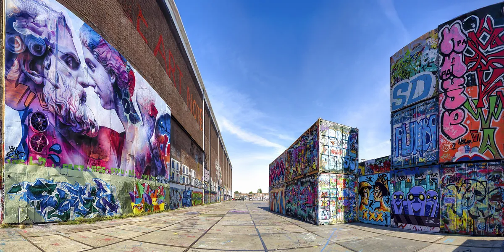
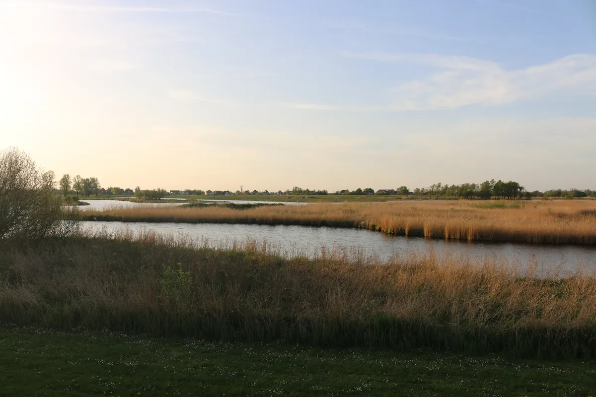
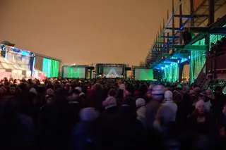

Festival guide, 2027
The best music festivals in Amsterdam in 2027
Amsterdam's dance festivals compared by sound and setting, from the docklands in March to the stadium in October, with the 2027 dates that are confirmed and the ones that are not.
A list meant for choosing.
Amsterdam's festival year opens in March with DGTL and closes in October with the Amsterdam Dance Event, and the summer between is busy. Most of these festivals take place in or just outside the city, in parks, woods and old docklands, so you can sleep in a hotel and be back the same night.
How this list was chosen.
A festival is on this list when these three things are true:
- Electronic or dance music is at the centre of the programme.
- It takes place in Amsterdam or close enough to reach from the city in a day.
- It has run recently, and it has either published a 2027 edition or given no sign of stopping.
A date from the festival's own site is shown as confirmed.
Amsterdam music festival dates for 2027 at a glance.
One clash to know about: Lentekabinet and Awakenings Upclose share 15 and 16 May. Nothing on this list is in the city between mid-May and the end of July. Awakenings, on 9 to 11 July, is near Tilburg.
| Festival | Where | 2027 dates | Sound | Setting | Best for |
|---|---|---|---|---|---|
| DGTL | NDSM Docklands | 26 to 28 March | Techno, house | Former shipyard | The start of the season |
| Lentekabinet | Het Twiske | 15 and 16 May | House, techno, dance | Lakes and meadows | Spring outdoors |
| Awakenings Upclose | Houtrak | 15 and 16 May | Techno | Recreation area | A smaller Awakenings |
| Awakenings | Hilvarenbeek | 9 to 11 July | Techno | Recreation area | The main Awakenings weekend |
| Dekmantel | Amsterdamse Bos | 29 July to 2 August | Techno, house and beyond | Woodland park | A wider programme |
| Loveland | Sloterpark | 14 and 15 August | House, techno, dance | City park | A city park in August |
| Mysteryland | Haarlemmermeer | 27 to 29 August | Wide electronic | Camping festival | A big weekend near the city |
| ADE | Across the city | 20 to 24 October | Every electronic style | Clubs, venues, conference | A week of nights |
| Amsterdam Music Festival | Johan Cruijff ArenA | Not announced (during ADE) | Big-room house, dance | Stadium | The biggest names |
What is the Amsterdam Music Festival?
The Amsterdam Music Festival, AMF for short, is the stadium event of the Amsterdam Dance Event week. It began in 2013 and is held at the Johan Cruijff ArenA, which co-organises it. The bill is built on big-name DJs from big-room house and dance music.
The 2026 edition was on 24 October. The 2027 date has not been announced, but it falls inside ADE week, which runs from 20 to 24 October 2027. AMF Amsterdam is one night in a stadium, so it suits people who want the big names and the production, and not a weekend in a field.
Which are the best techno festivals in Amsterdam?
DGTL and Dekmantel are the two to plan around if you want an Amsterdam techno festival, and Awakenings Upclose adds a smaller date in May. All three mix techno with house to some degree, Dekmantel most of all. For techno festivals in the Netherlands and beyond, see the best techno festivals in the world.
DGTL, NDSM Docklands

DGTL was founded in 2013 by Apenkooi Events and is held at NDSM Docklands, a former shipyard area on the north bank of the IJ. The 2027 edition is on 26 to 28 March, the first date on this list. It is a short ferry ride from Centraal station.
This is Âme DJ and Trikk at DGTL Amsterdam in April 2026, from the festival's own channel.
Dekmantel, Amsterdamse Bos
Dekmantel plays the Amsterdamse Bos, the woodland park on the south edge of the city, and books well beyond techno. The 2026 edition was its 12th. The 2027 festival is on 29 July to 2 August, and its sister event, Dekmantel Selectors, follows in Croatia on 19 to 23 August. The Dekmantel guide covers tickets and the programme.
Awakenings Upclose, Houtrak
Awakenings Upclose is the smaller of the two Awakenings festivals, held at Houtrak, a recreation area just west of Amsterdam. The 2027 edition is on 15 and 16 May. The main Awakenings festival is in Hilvarenbeek in July, covered below.
Which Amsterdam festivals are for house and dance music?
Loveland and Lentekabinet are the city's dance festivals with a broader sound, and each holds a fixed place in the calendar.
Loveland, Sloterpark
Loveland holds its summer festival in Sloterpark, on the west side of the city. The 2027 edition is on 14 and 15 August.
Lentekabinet, Het Twiske
Lentekabinet is the Dekmantel team's spring festival, held in Het Twiske, a nature area of lakes and meadows at Oostzaan, just north of Amsterdam. The 2027 edition is on 15 and 16 May.

When is the Amsterdam Dance Event?
ADE 2027 is on 20 to 24 October. It is five days of club nights, concerts and a conference, with more than 1,200 events in over 300 locations across the city, and AMF is one of them. The events are spread across the city's clubs, venues and arenas, and the ADE guide covers how to plan it. For the clubs that host most of those nights, see the best clubs in Amsterdam.
Which music festivals in the Netherlands are near Amsterdam?
Two large Dutch festivals sit within easy reach. Mysteryland returns to Haarlemmermeer, just south-west of the city, on 27 to 29 August 2027, after skipping 2026. Awakenings is further south, in Hilvarenbeek near Tilburg, on 9 to 11 July. For festivals across the rest of the continent, see the best electronic music festivals in Europe.
Not on this list, and why.
These are festivals people ask about that fall outside the tests above.
- Defqon.1. The hardstyle festival is on 24 to 27 June 2027, but at Biddinghuizen in Flevoland, a camping weekend and not a trip from the city.
- Kingsland. It is held on King's Day at the Olympic Stadium, but its 2026 bill was led by Dutch rap and pop acts, with hardstyle on a second stage.
- Mystic Garden. It was held in Amsterdam, and in 2026 it became a weekender at a new site in Zeewolde.
- Wonderfeel. It appears on lists of Dutch summer festivals, but it is a classical music festival, on 9 to 11 July 2027 near Baarn.
How to choose.
Look at the calendar. March, May, the end of July, August and October each have a reason to come, and ADE week is the busiest time of year for hotels. Check dates with the festival before you book travel.
Amsterdam music festivals FAQ.
What are the best music festivals in Amsterdam?
DGTL in March, Dekmantel in late July and the Amsterdam Music Festival during ADE in October are the main dates of the year. Loveland, Lentekabinet and Awakenings Upclose fill the months between.
When is the Amsterdam Music Festival 2027?
The 2027 date has not been announced. AMF is held during the Amsterdam Dance Event, which runs from 20 to 24 October 2027, and the 2026 edition was on 24 October.
Are there techno festivals in Amsterdam?
Yes. DGTL at NDSM Docklands, Dekmantel in the Amsterdamse Bos and Awakenings Upclose at Houtrak all book techno, and ADE in October adds hundreds of club nights.
What music festivals are in the Netherlands in 2027?
Beyond Amsterdam, Awakenings is in Hilvarenbeek on 9 to 11 July, Defqon.1 is in Biddinghuizen on 24 to 27 June and Mysteryland is in Haarlemmermeer on 27 to 29 August.
Sources.
- 2027 dates from each festival's own site: DGTL, Dekmantel, Awakenings Upclose, Awakenings, Loveland.
- Kingsland's 2026 line-up: FestivalInfo.
- AMF and its 2026 edition: FestivalInfo.
- Mystic Garden's move: FestivalInfo. Wonderfeel: the festival's site.
- Lentekabinet: Dekmantel.
- Mysteryland, ADE, Dekmantel, Awakenings and Defqon.1: this site's guide to each, linked above, which cites its own sources.
Continue reading
Read next.
 Festivals~6 min read
Festivals~6 min readBest New Year's Eve Festivals 2026 into 2027
Countdown NYE, Decadence, HiJinx, Rhythm and Vines and Awakenings: the best New Year's Eve festivals for dance music in 2026, with dates and where they are.
Read article → Festivals~7 min read
Festivals~7 min readMonegros Desert Festival 2027: Date, History and Guide
One long electronic event on exposed land near Fraga, with roots in Florida 135 and stages running through the night.
Read article → Festivals~14 min read
Festivals~14 min readBest Electronic Music Festivals in Europe 2027, Compared
Fourteen major festivals and seven smaller ones, from Tomorrowland to Garbicz, compared by sound, scale, setting and 2027 dates.
Read article →
Festivals~7 min readBest Winter Music Festivals 2027: Snowbombing, Igloofest, CTM
Winter music festivals in 2027, from Tomorrowland Winter and Snowbombing to CTM, Elevate and Shapes, with dates marked confirmed or unconfirmed.
Read article →Want something to play while you read? Let the Selector pick a DJ set.